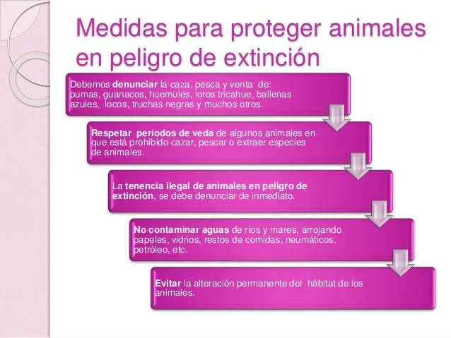

Unidos por la vida y los medios de subsistencia
Causas
Las causas por la que las especies pueden desaparecer son diversas, pero en general, la más habitual es la desaparición del hábitat donde viven. También ha habido muchas especies extintas por el ser humano; de hecho, hoy en día, el ser humano es el principal responsable de estos cambios con diversas actividades, por ejemplo, con la destrucción del hábitat natural (por ejemplo, el cambio climático está afectando a las placas de hielo donde vive el oso polar), la caza ilegal (a la que se ve sometido el rinoceronte africano por sus cuernos de marfil) o la introducción de especies invasoras con la que otras especies endémicas no puede competir o alteran su ecosistema (como, por ejemplo, el castor en Argentina y Chile, que son uno de los causantes de la destrucción de bosques en Tierra del Fuego).
Soluciones
¿Cómo puedo ayudar a salvar especies?